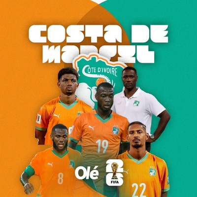
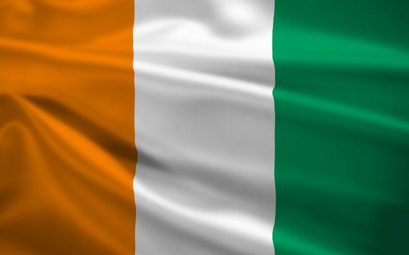

CAF
Costa de Marfil

Potencia africana, campeona de la Copa Africana de Naciones 2024, regresa al Mundial tras 12 años.
Curiosidades
- Debutó en un Mundial en 2006.
- Ha tenido generaciones doradas con Didier Drogba y Yaya Touré.
- Ganó la Copa Africana de Naciones 2024 como anfitrión.
- Es conocida por su estilo físico y ofensivo, con gran talento en Europa.